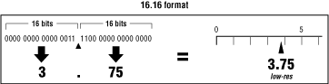
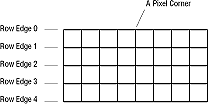
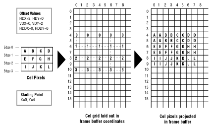
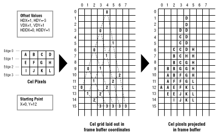
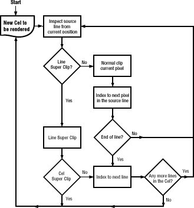
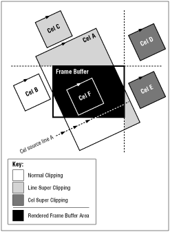
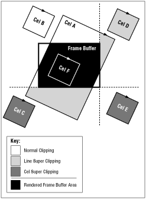

Although the projector reads cel pixels from left to right and from top to bottom, it does not necessarily write those pixels from left to right and from top to bottom in the frame buffer. You can set the projection quadrilateral so that the projector flips the cel image, rotates it, twists it into a bow tie, or manipulates it in other ways. When that happens, the pixels in a row can be projected from right to left, and rows can be projected from bottom to top. The following sections describe the process of projecting rows of pixels and the values used to control that process.
For example, a transparent pixel discovered at the data unpacker does not pass through the decoder or the pixel processor. A transparent pixel discovered at the pixel decoder does not pass through the pixel processor. Because transparent pixels (if detected early) require much less processing time than other pixels, you can create large cels with intricate patterns of transparency and still be able to process the cel as quickly as a smaller solid cel.
When a processed pixel comes out of the pixel processor with a 000 color value, the projector can treat it in one of two possible ways according to a control bit set in the CCB:
The coordinate system's origin (0, 0) is in the upper-leftmost corner of the screen; its positive x axis extends to the right of the origin, and its positive y axis extends down from the origin. Coordinates can be fractions. For example, a point can be at (154.24, 43.5), which is x = 154.25, y = 43.5. Coordinates can also be negative, which specify points beyond the left and top borders of the screen.
The CCB uses a 32-bit word to store an x or a y coordinate. For a low-res coordinate, the 16 most-significant bits of the word store the integer part of the value. (The most significant bit determines the sign of the integer, 0 indicates a positive integer, 1 a negative integer.) The 16 least-significant bits of the coordinate store the fractional part of the value. This is called the 16.16 format (see Figure 1).

Figure 1: 16.16 format.
When the projector uses coordinates to find a frame buffer pixel, it ignores the fractional coordinate values and uses the remaining integer coordinates to locate the pixel. For example, the coordinates (154.24, 43.5) specify the frame buffer pixel (154, 43).
When each of its pixels is defined as a square, a cel becomes a grid as shown in Figure 2, where each intersection in the grid defines the corner of a pixel. The projector treats this 8-by-4 cel as a grid of square pixels. The grid intersections are the corners of the pixels. Each row of pixels has an upper and lower edge (edges are shared with adjacent rows). The rows are numbered in this figure to show that there is always one more row edge in a cel then there are rows. To project the grid into the frame buffer, the projector must determine the frame buffer coordinates for each intersection point of the grid.

Figure 2: A cel as a grid.
One cel grid point is already determined: the upper-left corner of the cel falls on the coordinates defined by the starting-point value. The other grid points are set by the projection offset values, which are three pairs of values stored in the CCB. They are
HDX and HDY determine the slope of the row edge as well as the spacing of the pixels in the row. HDX and HDY values larger than 1 stretch cel pixels in the frame buffer; HDX and HDY values less than 1 shrink cel pixels in the frame buffer. The ratio of HDX to HDY determines the angle of the row's edge. For example, an HDX value of 2 and an HDY value of -2 will stretch out the pixels horizontally to the right and set the row-edge angle to a heading of 45 degrees up from the horizontal.
VDX and VDY determine the slope and spacing of the left edge of the cel. For example, a VDX value of .25 and a VDY value of .5 shrinks the cel pixels vertically and sets the left edge angle to a heading of 60 degrees down from horizontal.
HDDX and HDDY change HDX and HDY values by a set amount at the beginning of each row edge. When one row edge is calculated, the projector adds HDDX to HDX and adds HDDY to HDY. It then uses the new HDX and HDY values to calculate the next row edge. Because HDDX and HDDY can change the row slope and pixel spacing from row edge to row edge, they can create converging or diverging row edges.

Figure 3: Simple offset values.
Notice in Figure 10 the original cel (a very small cel) has three rows of four pixels. Those three rows have four row edges, here labeled 0, 1, 2, and 3. The 12 cel pixels are labeled A through L.
The cel's starting point is (0, 4) and its offset values are HDX=2, HDY=0; VDX=0, VDY=2; HDDX=0, HDDY=0. The projector adds HDX and HDY repeatedly to the starting-point coordinates to create the points (2, 4), (4, 4), (6, 4), and (8, 4). These points define the first line edge, labeled with zeros in the cel grid in Figure 10.
The projector then adds VDX and VDY to the cel starting point to create the starting point for the next row, which is (0, 6). The change offsets HDDX and HDDY are both 0, so HDX and HDY remain the same. The projector uses HDX and HDY to calculate the points in the second row edge: (2, 6), (4, 6), (6, 6), and (8, 6).
The projector continues to use the offset values to lay out the rest of the cel grid, calculating the coordinates of each intersection point. Once the coordinates are available, the projector writes to the frame buffer to slant and stretch out each cel pixel as specified in the cel grid.
Figure 4 shows a more involved example using the same cel. This example uses HDDX and HDDY to change the horizontal offsets from row edge to row edge. Offset values project a rectangular cel into the frame buffer using diverging row edges to fan out the cel pixels.

Figure 4: Complex offset values.
The cel's starting point is (0, 12) and its offset values are HDX=1, HDY=-3; VDX=1, VDY=1; HDDX=0, HDDY=1. The projector adds HDX and HDY repeatedly to the starting-point coordinates to create the points (9,1), (6,2), (3,3), and (0,4). These points define the first line edge, labeled with zeros in the cel grid in Figure 11.
The projector then adds VDX and VDY to the cel starting point to create the starting point for the next row, which is (1,13). It adds the change offsets HDDX and HDDY to the current values of HDX and HDY so they now become HDX=1, HDY=-2. The projector uses these new horizontal offset values to calculate the points in this second row edge: (2,11), (3,9), (4,7), and (5,5).
The projector continues to use the offset values to lay out the rest of the cel grid, calculating the coordinates of each intersection point. It uses HDDX and HDDY to change HDX and HDY for each row edge. Once the coordinates are calculated, the projector writes values to the frame buffer to slant and stretch out each cel pixel as specified in the cel grid.
The starting-point coordinates and the offset values can be fractions (although they are not in this example). As offsets are added, the resulting coordinates can also be fractional. When the projector uses these coordinates for writing, it ignores the fraction and uses only the integer value because pixel addresses cannot be fractions. The fraction is retained, however, for the next offset addition so that the effect of the fractions is cumulative. For example, if HDX is .25 and the starting x coordinate is 7, the first four x coordinates are 7.0, 7.25, 7.5, and 7.75, which are all truncated to 7.0. The fifth x coordinate is 8.0, the cumulative result of the fractional HDX value.
When the offset values are set to increase the overall size of cel pixels, the projector can use two methods that write to multiple frame buffer pixels for each cel pixel:
Region fill automatically takes over for any pixel region not found in the lookup table and fills in a region of the frame buffer within the cel pixel's corner coordinates using the cel pixel's 16-bit value. A value in the CCB can optionally turn off region fill so that the projector uses speed fill for all pixels. This causes a single pixel to be output, even for enlarged pixels, causing the image to have holes giving it a sparse or "strainer" effect.
When the cel engine renders a cel to frame buffer memory, it performs a clip test before it renders pixels into the frame buffer. The clip region is the area in frame buffer memory that is visible on the screen, usually the entire frame buffer memory. A cel source line is a single line of pixels in a cel that is scanned by the cel engine. The cel source line is analogous to a scanline on the screen.
The cel engine inspects each pixel to determine if its location falls inside the clip region of the frame buffer. If a pixel is not in the clip region, it is not rendered to the frame buffer, and therefore does not change any frame buffer memory. This is normal clipping and it is part of the basic operation of the 3DO cel engine. Normal clipping is not based on the settings of any of the super clipping features. If super clipping does not apply, normal clipping is performed.
There are two types of super clipping: line super clipping and cel super clipping. The cel engine stops rendering a region if it determines that the remaining pixels will never enter the clip region.
Note: Cel super clipping is currently not available.
Figure 5 shows a flow chart of the cel clipping process.

Figure 5: Cel clipping flow chart.
Figure 6 shows examples of the different types of clipping.

Figure 6: Clipping example.
The cel engine looks at the cel source line and determines that part of the line might intersect the clip region. At this point, the cel engine does not know exactly where the source line will end. It knows only the current point and direction (the vector) of the line, so it knows it might intersect a clip boundary. The cel engine goes through the following steps to determine whether or not clipping can be performed:

Figure 7: Cel super clipping.
To enable line super clipping and disable cel clipping (cel clipping should currently not be used) you should:
A classic test to see if a face in a rotating object has been flipped around to become a backface is to check to see if its cel pixels are rendered clockwise (CW) or counterclockwise (CCW). The pixels in a frontface cel are rendered clockwise; those in a backface cel are rendered counterclockwise. The projector can test the first pixel of a cel to see if it's rendered clockwise or counterclockwise. If it's rendered counterclockwise, the projector does not render the cel at all. If it's rendered clockwise, the projector renders the complete cel.
The projector can also individually test all of the pixels within a cel and render only those pixels that are clockwise. This removes only those parts of a cel that have been turned into backface-for example, half of a bow-tie-twisted cel. This behavior can be reversed.
The CCB controls backface removal, and can specify that backface pixel removal or backface cel removal be turned on or off.